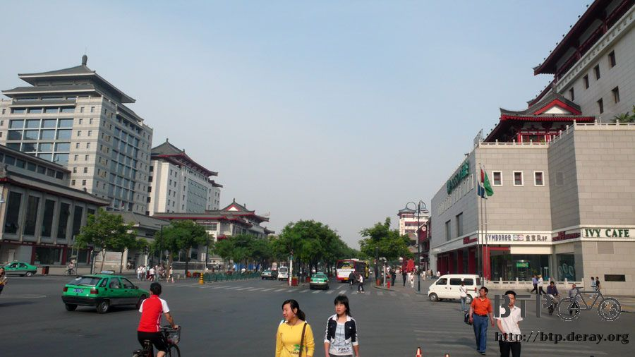
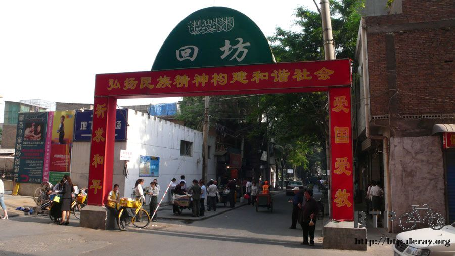
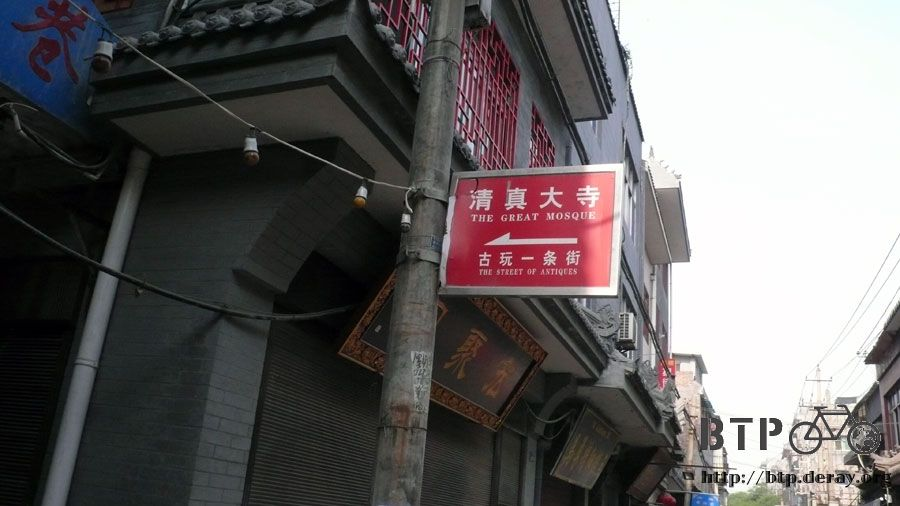
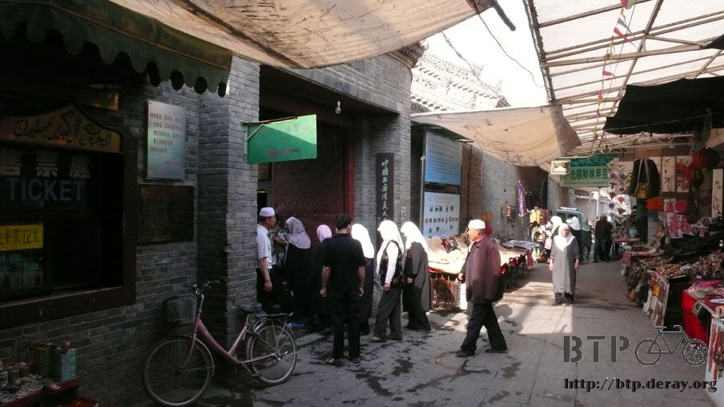
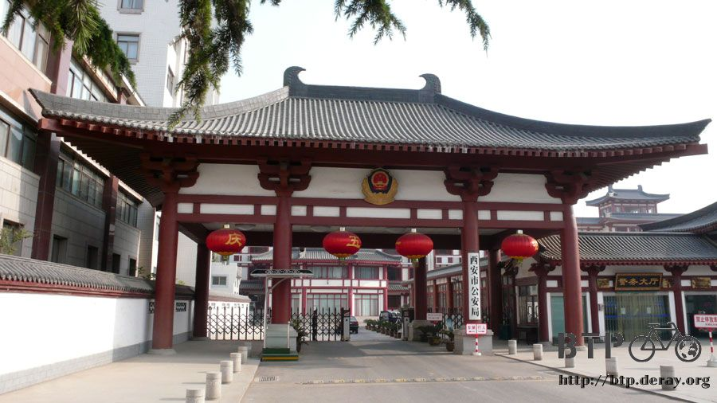
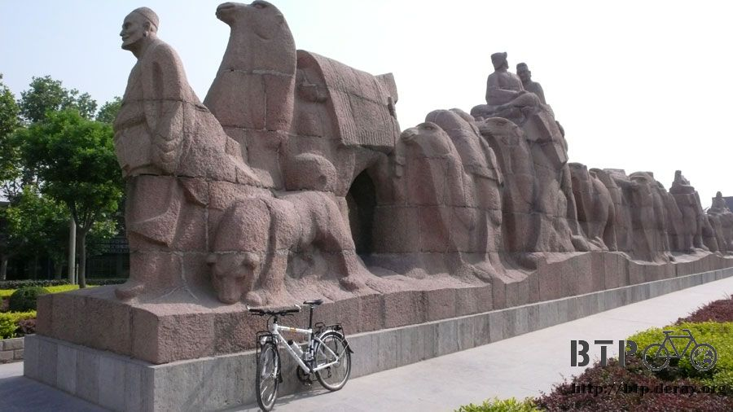
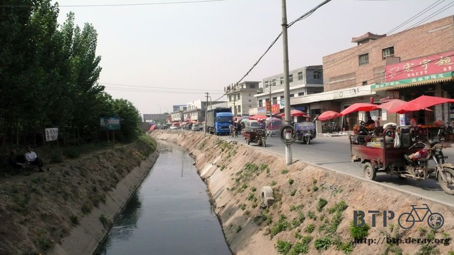
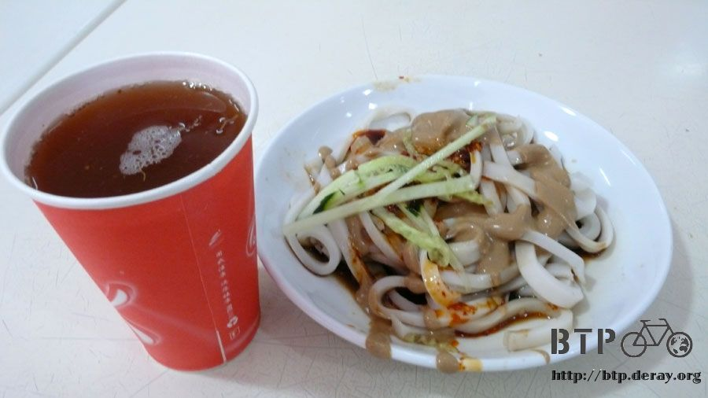
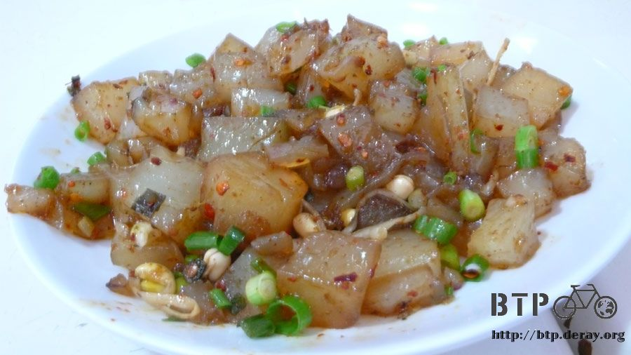
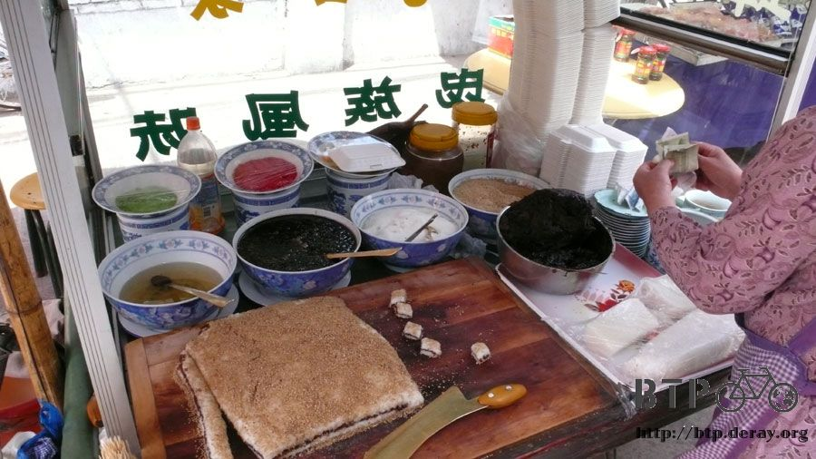

西安漫遊
今天沒有特定的計畫，但是白白浪費在西安的一天，也是挺可惜的，所以就騎著小多在市區瞎晃。
為了怕迷路，所以先去火車站前的報攤買了地圖。
這邊兜售地圖的小販很多，有的兩塊、三塊的，但是比較小張，只有西安城牆裡面的地圖，
這大概只佔整個西安市的十五分之一吧，那大張一點的，則要價四塊，很大一張，可以拿來當壁紙貼在牆壁上。
早餐就喝自己帶的開水，還買了一籠鮮肉包子，有八個，可以慢慢消化，撐一整個早上應該沒有問題。
西安是全中國唯一將古代城牆完整保留下來的城市，當然經過很多次的修補，可是看起來還是很有莊嚴的氣氛，
而且城牆的維護非常好，連一絲殘破的感覺都看不到，不論是在城牆裡面還是外面，都是熱鬧非凡的市區。

不僅城牆被保留下來，連護城河都在還，幾十年前，出了城牆之後就都是一望無際的田地了，
幾十年後的現在，出了城牆不論往哪一個方向再走個十幾公里，都依然是熱鬧非凡的城市。

早上先去了城牆中心的鐘樓，其實可以進去參觀，但是什麼地方都要門票，實在很傷腦筋，
到門口就算到過了，有沒有爬上去就不是太在意。

然後去了回民街，其實回民街是統稱，並不是一條街道的名字。

有點像是唐人街那樣聚集的區域，只是這邊住的都是回民，而所謂回民，就是信奉回教，或是稱為伊斯蘭教的清真徒。
在回民街裡，有很多清真風味的特色食物，男生就會在頭上戴一個白色小帽子，女生就會包條頭巾，
在回民街可以大快朵頤各種美食，切記不要講到『酒』和『豬』就沒事了。

因為早餐才剛吃過，所以就先買個熱騰騰的蔥油餅(好像又稱為菜盒子)體驗一下回民的味道。

吃著超燙的一元蔥油餅，尋找清真寺在哪，跟著回民的人潮比較容易找到，
雖然是一個很大的景點，但是清真大寺位在一個非常非常小的巷弄當中，開車不太可能進的來，

連騎自行車都要不斷的說借過借過，才可以穿過的小巷子(賣古玩的)，就是清真大寺的所在地。

進去也要門票，由於我對回教幾乎沒有認識，所以進去應該會啥也看不懂。

回民街裡，巷弄都不寬，且種滿了枝葉繁密的大樹，GPS記錄器因為被遮斷而接受不到訊號，
結果騎了一天的車，軌跡都亂飄亂飄的，一下子就跑到幾百公里遠的地方，然後又跳來跳去，只好放棄這個錯誤的軌跡。
偶然發現市區裡有電影院，蜘蛛人三上映了。票價成人35、學生25元。

今年暑假我會錯過非常非常多的電影，而且都是超好看的續集系列，除了蜘蛛之外，還有娘娘腔海盜、疤痕巫師、綠妖怪等。
這些片等我回台灣之後，應該都發行DVD了吧～Orz
我一定要花一整天的時間當馬鈴薯，把這些電影通通看完，彌補錯過的遺憾。
結果今天就在街上看到賣影碟的店面，早有耳聞中國的盜版光碟是很誇張的，但實際看到還是很敬佩。
蜘蛛人三嶄新的包裝放在店裡誘惑著我，一片只要六塊錢，比我用租的還便宜。
請老闆娘播一下看畫質怎麼樣，大概介於戲院偷拍版和影片流出版之間的品質，
可是發音不知道為什麼是講中文，當場腿軟了一下，揮揮手說不買了。
繼續在店裡面尋寶，除了新的片子之外，其他都是一片四塊錢，而且都是用mpeg4的格式壓縮，
然後燒到DVD-D9格式的片子裡面，什麼？講太專業聽不懂？
那我講簡單一點，就是店裡有賣周潤發全集、周星馳全集，或是CSI全集，還有X檔案全集這樣大集合的片子。
很像早年光華商場的遊戲大補帖，只是這裡改成電影大補帖，
很想買一片回家當紀念，但是要載著DVD騎半年的車好像有點蠢，所以就算了。
城牆裡的房子都蓋得很漂亮，像這個西安公安局，居然有這個華麗的牌樓。

離開城牆內的市區，往西到絲路起點的雕像騎去。
明天一大早也要從這裡出發，先來探個路，起點的雕像很長，

大概有五十公尺吧，咖啡色的，故意弄得很不清楚，像一顆大石頭，然後只刻出大致的輪廓。
將小多放在雕像的旁邊，明天小多就要跟著張騫和旁邊那隻貓熊(驚)，一起去絲路冒險了。
接著很努力的看著地圖往郊區的長安城遺址騎過去，從地圖上看起來感覺很漂亮，有很多小村在那邊的感覺。
稍微迷路了一下，總還是找到了入口，因為根本沒有明顯的入口，

入口看起來像菜市場，而走進裡面也只像是我已經看了好幾天的鄉村街道而已。
已經看不到任何長安城的遺址了，有點可惜，我都騎這麼遠到這裡來~_~

中午到回民街吃大餐，經朋友推薦，點了很好吃的麻醬粉皮，是米做的麵條，配上芝麻醬，黃瓜絲，還有紅紅的醬(但是不辣)。
吃起來冰冰涼涼的，味道很香，麵條很Q，感覺很像台灣的涼麵，可是這又不是麵，很好吃！

還有炒涼粉，很像是炒蘿蔔糕的味道，涼粉很軟，夾的大力一點就分解，這個也是大推薦的料理。
另外還有煎餃，跟台灣不太一樣的昰，回民口味的昰很薄的煎餃，煎餃的皮酥酥脆脆的，一絕呀！

配著用酸梅熬出來的冰鎮酸梅湯，不是用酸梅粉泡的唷，喝那種的就虛掉了。
要是我的水壺每天都可以裝滿這麼好喝的冰鎮酸梅湯那該有多好orz
這麼好喝的酸梅湯，等我回台灣就喝不到了，我會很懷念西安回民街的味道的 T_T
吃飽飯後又買了這邊的甜點小吃，一樣是用米做的糕點，但是配上甜甜的醬汁，味道很好吃。
不同於一般常見的甜點，既新奇又好吃，一份兩種口味，只賣三塊錢。

準備要回去之前，再去回民的糕餅店買了各式各樣的糕餅要當一路上的點心。
有半斤的水晶餅，還有很多不同口味的餅，都是一斤八塊，所以店員混著幫我都各拿一點。
提著沉甸甸的袋子，花十五塊五購買零嘴的感覺還挺幸福的*^^*
想到明天就可以邊騎車邊吃這些好吃的糕餅，都不覺得騎車是辛苦的事情了。

下午之後，太陽又開始西曬得很惱人，這兩天都在尋找哪邊有賣遮陽帽，
平常可以當成帽子戴，太陽很大的時候，還可以把帽沿往下折，把整個臉都蓋住，擋西曬效果超好。
看到好幾個騎自行車的路人都有這樣的東西，可是我在街上都沒看到有在賣。
為了找這個還特地跑去衣服的批發市場，那邊有點像是高級一點的五分埔，或是低級一點的忠孝東路。
逛了好幾『棟』的衣服批發賣場，都沒有賣我想找的遮陽帽，有點鬱卒。
明天就要出發了，離開市區前買不到的話，那之後應該會更難買到才是。
回旅館的時候問旅館的大叔，像這樣的遮陽帽哪裡有在賣呀？
唉，踏破鐵鞋無覓處，得來全不費工夫，旅館隔壁的隔壁的隔壁，就是賣帽子的店，
只是現在太陽西曬正好照到店裡，所以老闆就把門給關起來，晚一點開門就可以入手期待已久的遮陽帽了。
筆記本裡，我都會紀錄今天吃了幾隻冰棒，
一開始都會寫兩隻，然後沒多久就塗掉，改寫四隻，接著再塗改，變成六隻，然後是八隻。
所以都修改的亂七八糟的，為了美觀和紀錄方便，現在吃冰棒都用正字記號來寫。
而今天正好吃了一個『正』的冰棒數量。
說是休息的日子，可是我也騎著小多跑了快六十公里，這樣好像沒有乖乖的休息~_~
不過膝蓋疼痛的情形已經消失了，到中國兩個星期來沒有生過病也沒有拉過肚子。
暖身完畢也休息了兩天，明天真正的騎車考驗才要開始呀～(期待)
繼續閱讀：5.8 看那人！HELLO～
中國-人民幣－ 1：4.3 台幣
5.7 |
總計：77元 |
西安地圖4元、一籠鮮包子3元、蔥油餅1元、午餐酸梅湯、麻醬涼皮、炒涼粉8元、甜點心3元、回族的點心大總匯15.5元、西瓜5毛、冰棒五隻2.5元、遮陽帽5元、晚餐餛飩湯2.5元、酸梅湯1元、網吧一小時1元、住店30元 |
|